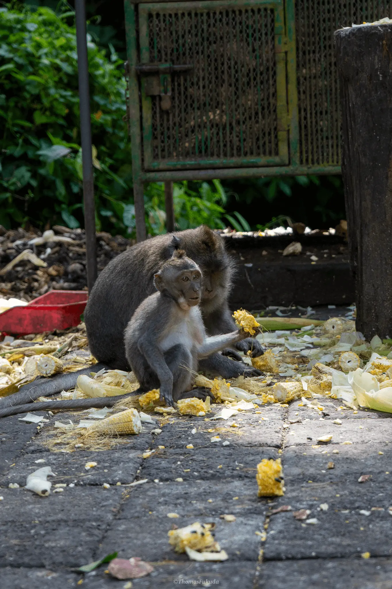
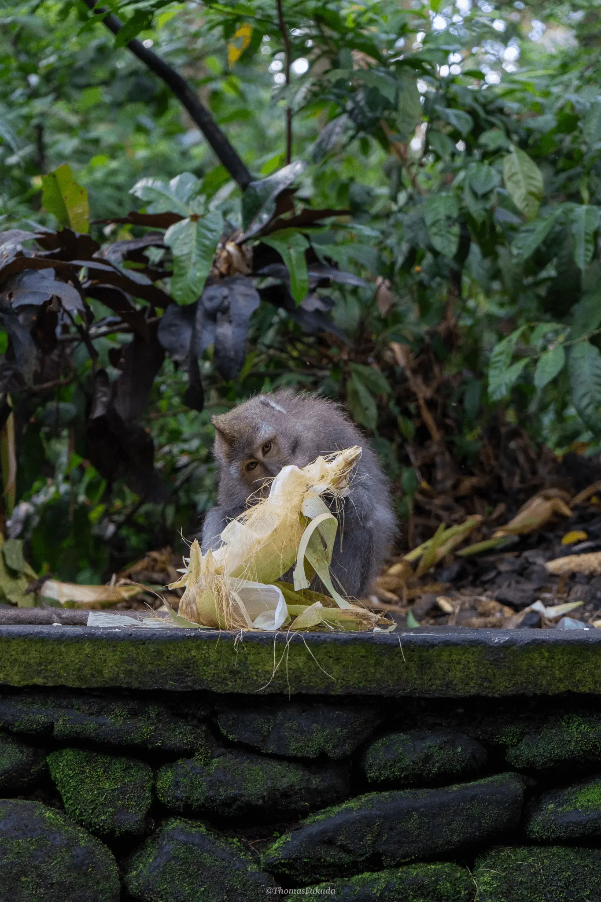
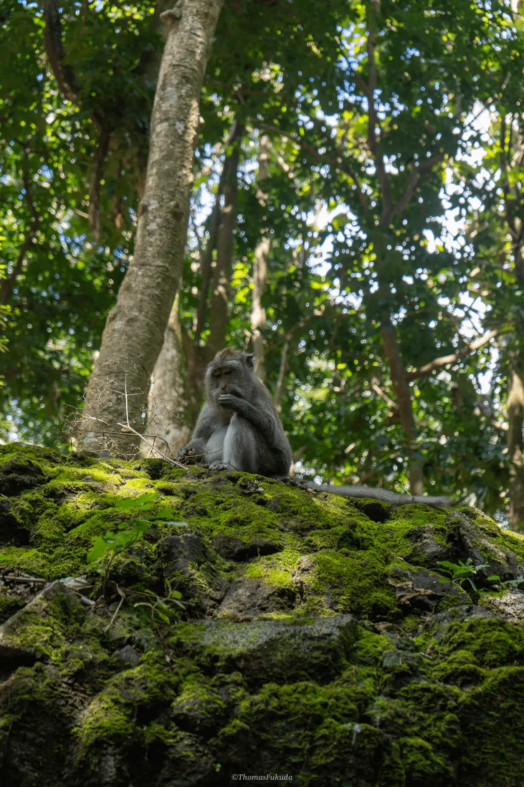
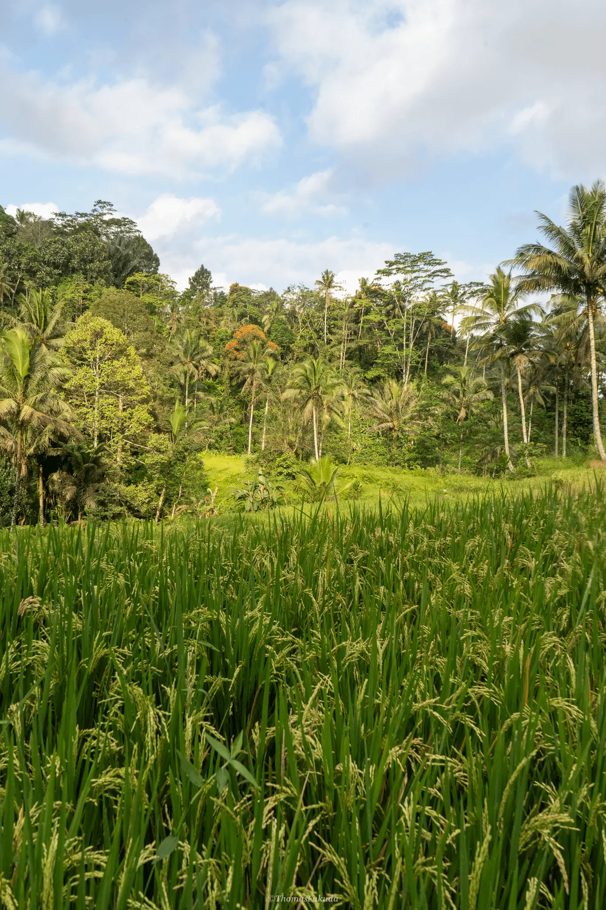
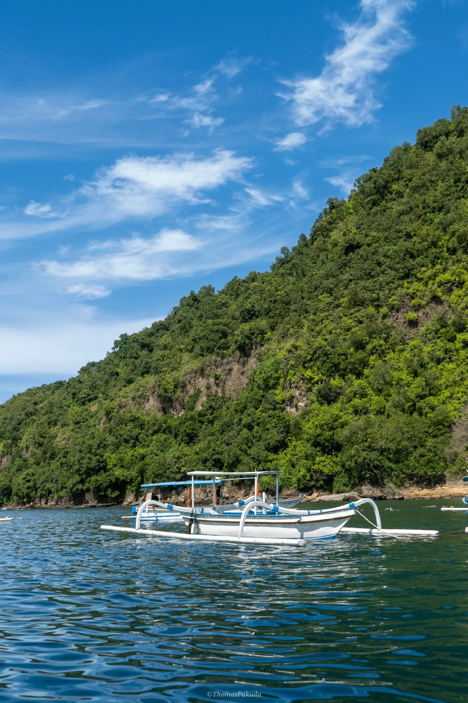
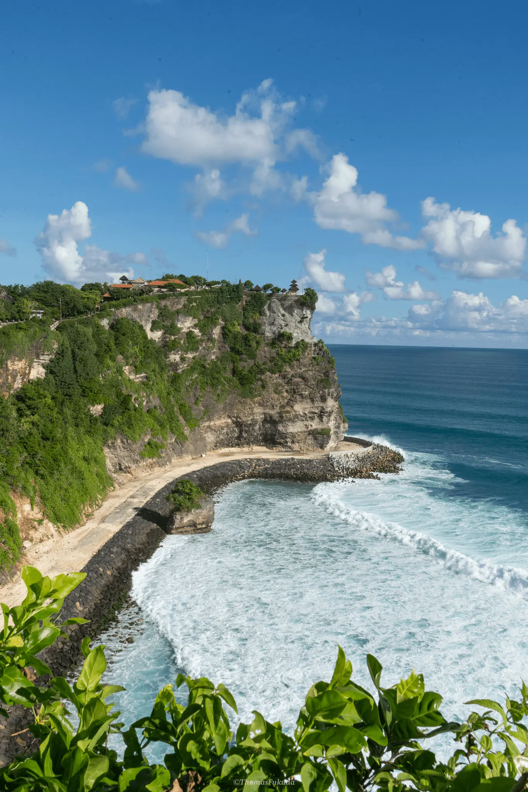
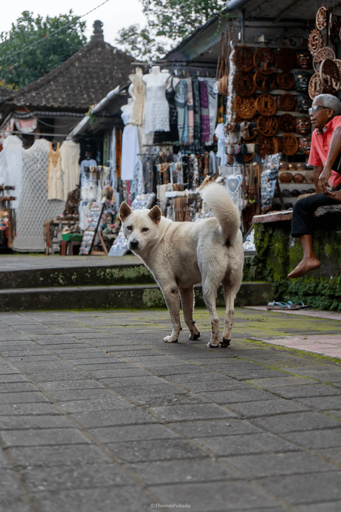
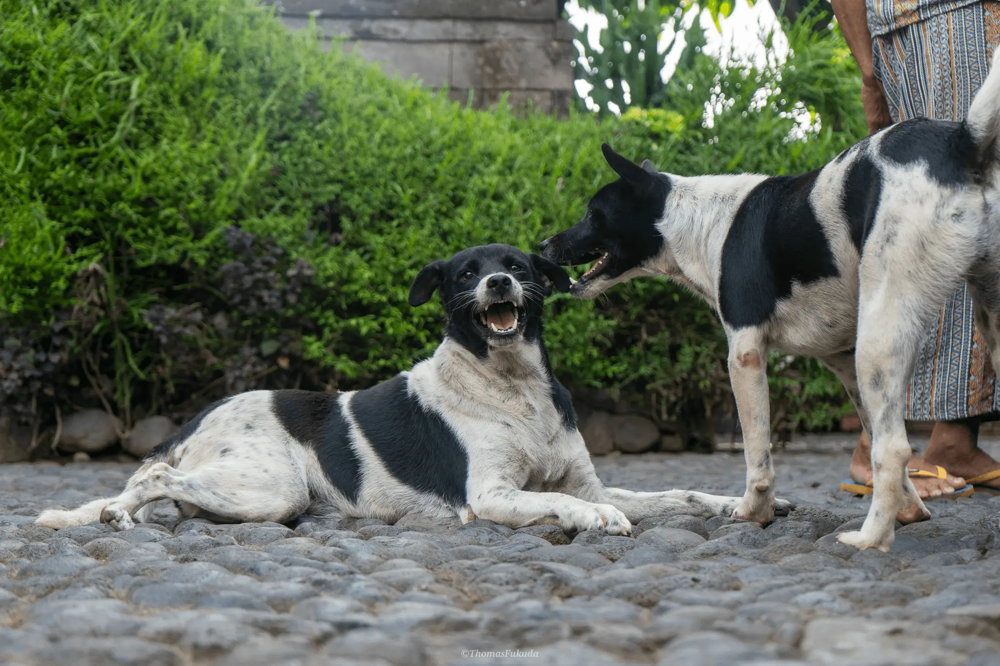

| Location: | Indonesia |
| Date: | May 2025 |
| Photo Count: | 10 |
| Description: |
In the summer of 2025, my family traveled to Bali, Indonesia, for an unforgettable vacation. Though the weather was hot and humid, the island was beautiful and made it worthwhile. We admired gorgeous oceans, lush tropical scenery, and I enjoyed delicious local food that were fairly new to me. My favorite part of the trip was the wildlife, as I saw stray dogs and wild monkeys roaming freely across the island.


Ubud5.30.2025
Baby monkey eating corn in the monkey forest.

Ubud5.30.2025
Adult monkey eating corn in the monkey forest.

Ubud5.30.2025
Adult monkey sitting on the top of mossy rocks

Bali6.4.2025
Rice fields in the countryside

Padangbai6.1.2025
Small snorkeling escort charter boat

Uluwatu6.5.2025
Waves off the cliff of Uluwatu temple

Tampaksiring6.4.2025
A stray dog in the town of Tampaksiring

Bali5.31.2025
Two dogs playing in a small home in Bali

Padangbai6.01.2025
The coast off of Padangbai